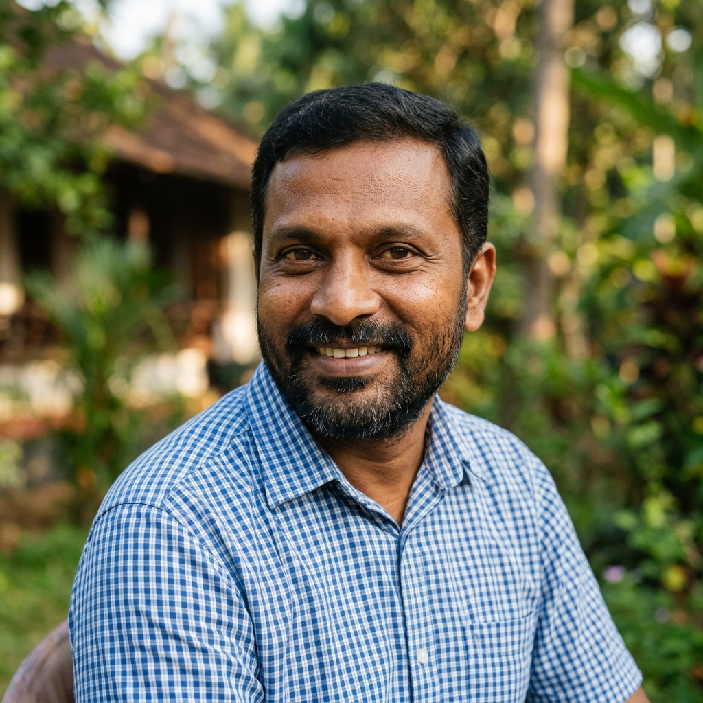

From midnight 24/7 emergency ambulance dispatches to providing warm daily meals for abandoned elders and Google certifications for rural youth, Annai Foundation stands as Karaikal's unwavering safety net.
Every single hour of every day, our volunteers and responders are awake, active, and standing guard over fragile lives.
Our ambulance rushes with oxygen and trained first-responders to stabilize road polytrauma victims within 9 minutes.
Volunteers prepare and distribute fresh, hygienic meals and clean drinking water to abandoned elders near the railway terminus.
Underprivileged college graduates receive hands-on training in cloud tools, resume drafting, and interview confidence.
Immediate coordination for critical dengue, surgery, and neonatal emergency platelet transfusions at local hospitals.
Real numbers audited for complete transparency and governance.
Equipped with oxygen cylinders, folding stretchers, and first-aid kits, our ambulance fleet operates without delay across Karaikal and Puducherry coastlines.
Calculate your immediate income tax benefit when donating to Annai Foundation:
Coordinating voluntary donor camps across colleges and maintaining an active donor roster in Karaikal.
Ensuring every unclaimed deceased soul receives traditional flowers, sacred prayers, and honorable farewell.
Bridging rural college graduates with workplace digital literacy, Google tools, and career confidence.
Round-the-clock free and subsidized emergency medical transportation equipped with oxygen and first responders.
Free practical workshops providing rural graduates with modern digital fluency, spreadsheets, and career coaching.
Warm meals, medical support, and dignified final rites ensuring no human being leaves this world uncared for.
Behind every metric is an individual with dreams, family, and a second chance at life.

"When my motorcycle skidded on the dark ECR curve, I was unconscious and bleeding. Bystanders called Annai Foundation. Their ambulance arrived in 8 minutes with oxygen and safely moved me to JIPMER hospital. Today, I am back with my two young daughters."
"As a fisherman's daughter, I had a degree but lacked the confidence to face modern office interviews. The free Google digital workshop by Annai Foundation gave me hands-on software fluency and interview coaching. I now earn a salary that supports my family."
Every rupee is channeled directly to frontline survival and skill building.